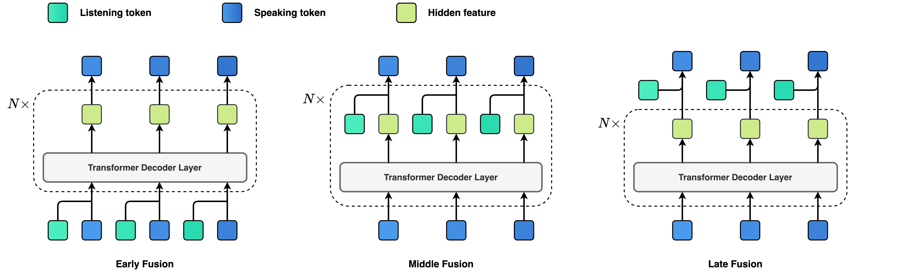

Dialogue serves as the most natural manner of human-computer interaction (HCI). Recent advancements in speech language models (SLM), have significantly enhanced speech-based conversational AI. However, these models are limited to turn-based conversation, lacking the ability to interact with humans in real-time spoken scenarios, for example, being interrupted when the generated content is not satisfactory. To address these limitations, we explore Full Duplex Modeling (FDM) in interactive speech language models (iSLM), focusing on enhancing real-time interaction and, more explicitly, exploring the quintessential ability of interruption. We introduce a novel model design, namely Listening-while-Speaking Language Model (LSLM), an end-to-end system equipped with both listening and speaking channels. Our LSLM employs a token-based decoder-only TTS for speech generation and a streaming self-supervised learning (SSL) encoder for real-time audio input. LSLM fuses both channels for autoregressive generation and detects turn-taking in real time. Three fusion strategies—Early Fusion, Middle Fusion, and Late Fusion—are explored, with middle fusion achieving an optimal balance between speech generation and real-time interaction. Two experimental settings, Command-based FDM and Voice-based FDM, demonstrate LSLM's robustness to noise and sensitivity to diverse instructions. Our results highlight LSLM's capability to achieve duplex communication with minimal impact on existing systems. This study aims to advance the development of interactive speech dialogue systems, enhancing their applicability in real-world contexts.
Vanilla TTS without real-time listening ability
LSLM in clean condition
LSLM in noisy condition
Illustration of simplex, half duplex, and full duplex speech language models.
(A): Simplex speech language model with listening ability.
(B): Simplex speech language model with speaking ability.
(C): Half duplex speech language model with both listening and speaking abilities.
(D): Full duplex speech language model can listen while speaking.
The proposed LSLM uses a token-based decoder-only TTS to model the ability to speak and a streaming self-supervised learning (SSL) encoder to model the ability to listen. LSLM fuses these two channels and detects turn-taking in real time.

To comprehensively explore the integration of a listening channel to the proposed LSLM, we try to fuse the listening channel and the speaking channel with early, middle, and late methods.
Early Fusion integrates the listening and speaking channels at the input embeddings before autoregressive prediction.
Middle Fusion merges the listening and speaking channels at each Transformer block.
Late Fusion combines the channels at the output logits before the softmax operation.
We tested the FDM ability of the proposed LSLM in two scenarios: Command-based FDM and Voice-based FDM. Experiments indicate that our proposed LSLM can achieve duplexing capability with little impact on the previous system.
For more details, please refer to our paper: Language Model Can Listen While Speaking.